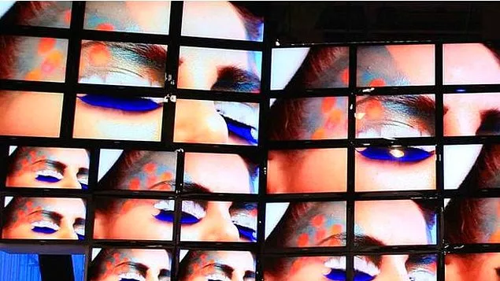
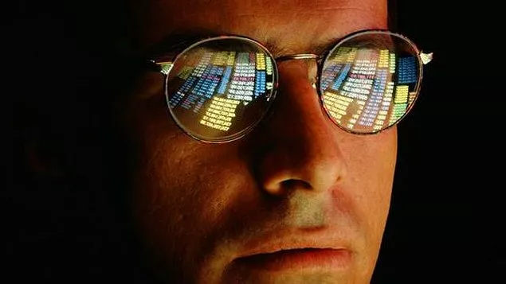

Bilgi yüklemesinden korkmak gerekir mi?
1971’de yayımlanan The Futurist adlı dergideki bir makalede, ortalama bir kentte artık altı televizyon kanalının olduğu belirtiliyor, fakat gelecekte bu sayının 100’e, hatta 200’e tırmanabileceği uyarısı yapılıyordu. “Bunun sonu nereye varacak?” diye soruluyordu yazının sonunda.Bilgiye her an bağlantılı olduğumuz bugün bu sayılar komik geliyor. Fakat aşırı bilgi yüklemesi her kuşağın sorunu gibi görünüyor. Tarihe dönüp bakarsak kitap basımına da internetin ortaya çıkışına da din adamları da politikacılar da aynı tepkiyi göstermişti: Artık daha fazlasını kaldıramayız; insanlık kapasitesinin sonuna ulaştı.
Yeteneksizler neden kendilerini yetenekli sanır?
Psikologlar insanların kendi yeteneklerini yargılama konusunda iyi olmadığını, en yeteneksiz insanların en kötü değerlendirmeleri yaptığını belirtiyor. Psikologlar kendi başarısızlıklarımızı sandığımızdan daha fazla görmezden geldiğimizi söylüyor. Yeteneksiz bazı insanların kendilerini överek bu kadar sinir bozucu görülmelerinin nedeni de budur belki.
